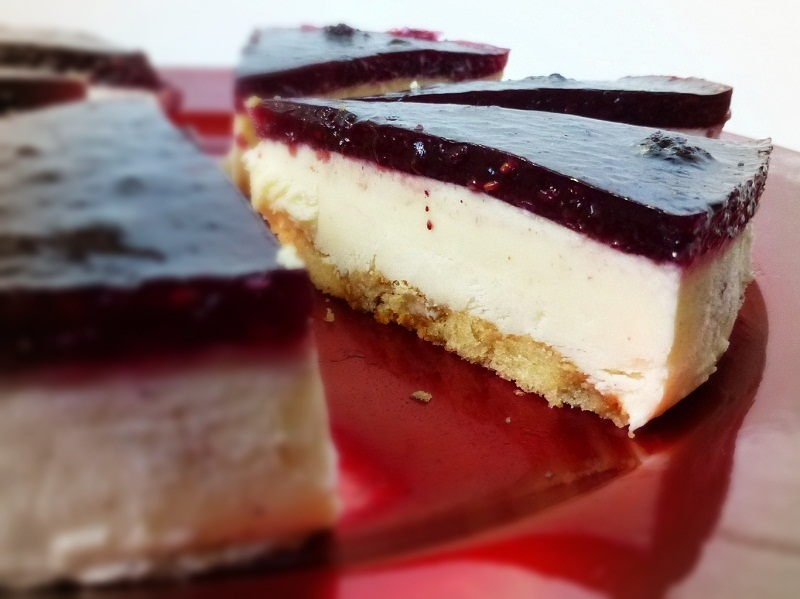

MAMI TARTA
Gaur mami tarta egingo dugu.

Osagaiak
- 10 L esnegai harrotuta
- 3 sobre mami
- 3 goilarakada azukre
- 2 esne edalontzi
- 3 goilarakada azukre
Prestaketak
- Lehenengo egosten jarri.Irakitzen hasten denean mamia erantsi egiten dugu.
- Ondoren, eragiten dugu eta esnea botatzen dugu.
- Gero, ia egina dagoenean desmoldatu egiten da.
- Bukatzeko, botatzen da molde bat eta hotza dagoenean desmoldatu egiten da.
- Azkenik apaintzen duzu marmaladarekin.
Nutrizio ezaugarriak
Postren honetan A eta B bitaminak ditu eta kaltzioa ere bai. Proteina piloa du eta koipea. Baina kontuz! Ez da asko jan behar.
Orri Nagusia